Amplia gama de productos
Desde café y bebidas hasta menaje, embutidos y conservas, todo en un solo distribuidor.
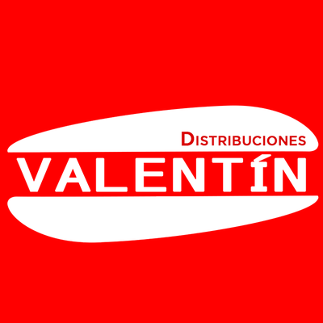
Distribuciones Valentín Contactar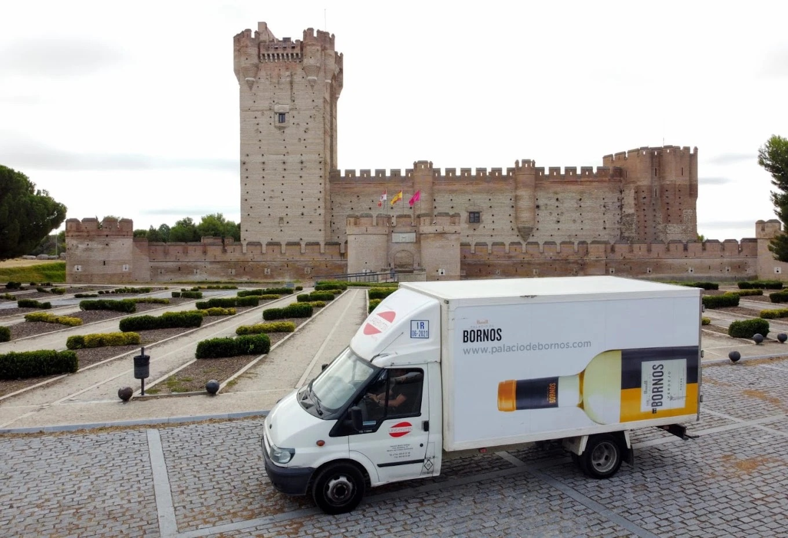
Distribución para hostelería: alimentación, bebidas y menaje de primeras marcas, desde Medina del Campo y hasta 90 km a la redonda.
Castillo de la Mota, Medina del Campo

Desde café y bebidas hasta menaje, embutidos y conservas, todo en un solo distribuidor.
Trabajamos con Grupo Leche Pascual, Bodega Palacio de Bornos, Campofrío, Conservas Calvo y más.
Servicio profesional adaptado a las necesidades específicas de cada cliente.
Distribución eficiente en Medina del Campo y comarca, hasta 90 km alrededor.
40años de experiencia
500clientes satisfechos
2000productos distribuidos


Café, bebidas, lácteos, conservas, embutidos y menaje en un solo distribuidor.
Café Mocay para barras y cafeterías.
Bodega Palacio de Bornos, entre las marcas que distribuimos.
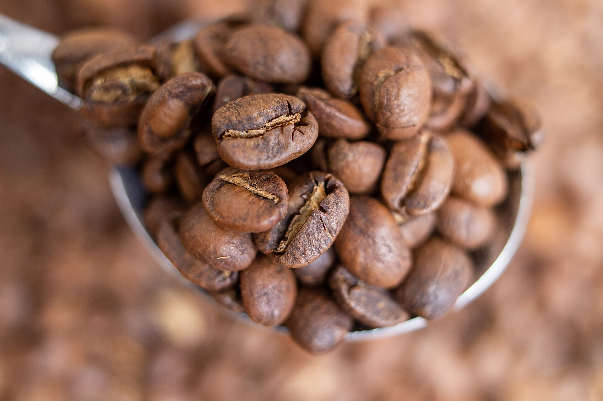
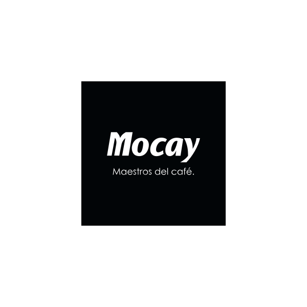
Café de primera marca para barras y cafeterías. Una de las marcas que distribuimos en hostelería.
Distribución profesional para que cada producto llegue a su destino.
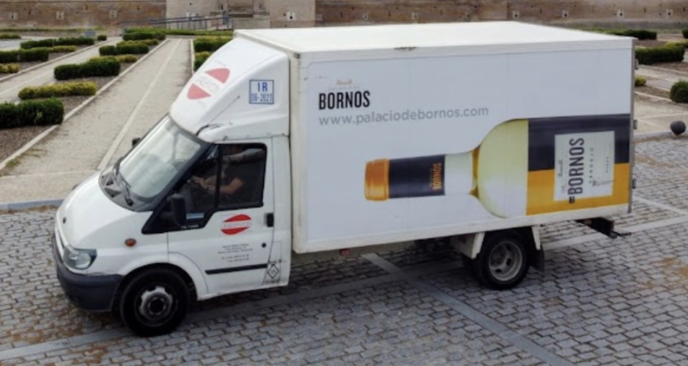
Reunimos en un solo pedido café, bebidas, lácteos, conservas, embutidos, congelados y menaje.
Reparto en Medina del Campo y comarca, hasta unos 90 km a la redonda.
Trato cercano y atención personalizada, con un equipo con experiencia para asesorarte.
Productos de primeras marcas para tu cocina, tu barra y tu sala.
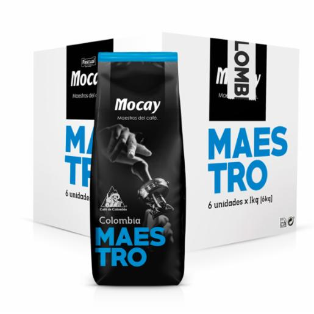
Café Mocay
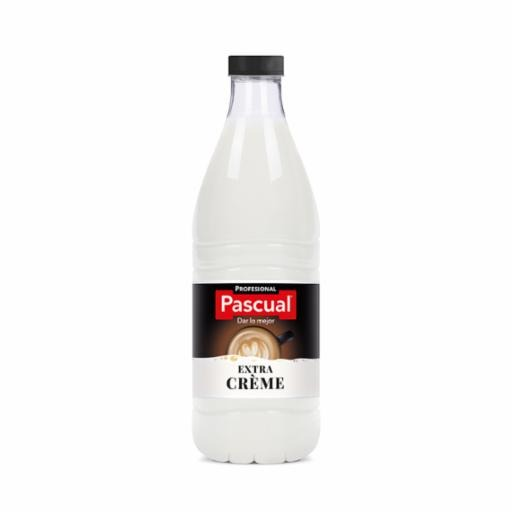
Grupo Leche Pascual · Explorar la gama
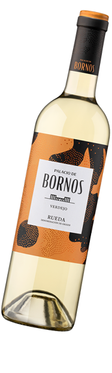
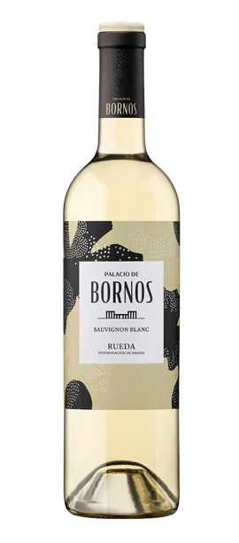
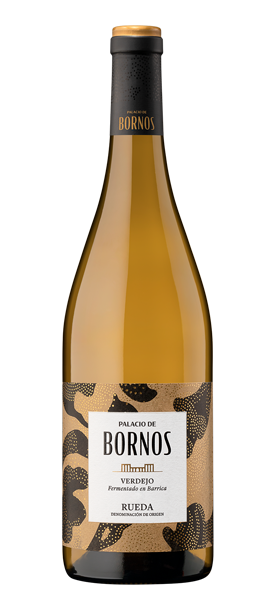
Explorar la selección
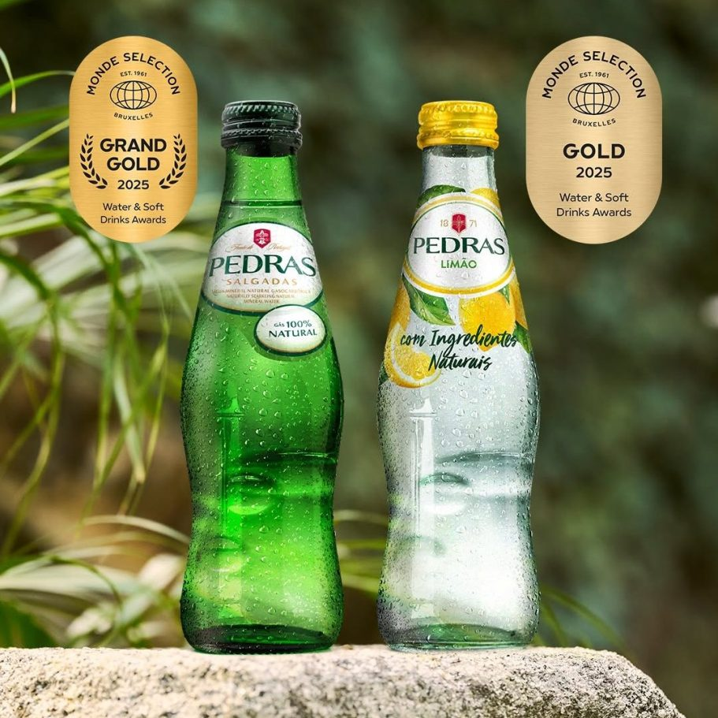
Bezoya · Aquarel · S.Pellegrino · Pedras
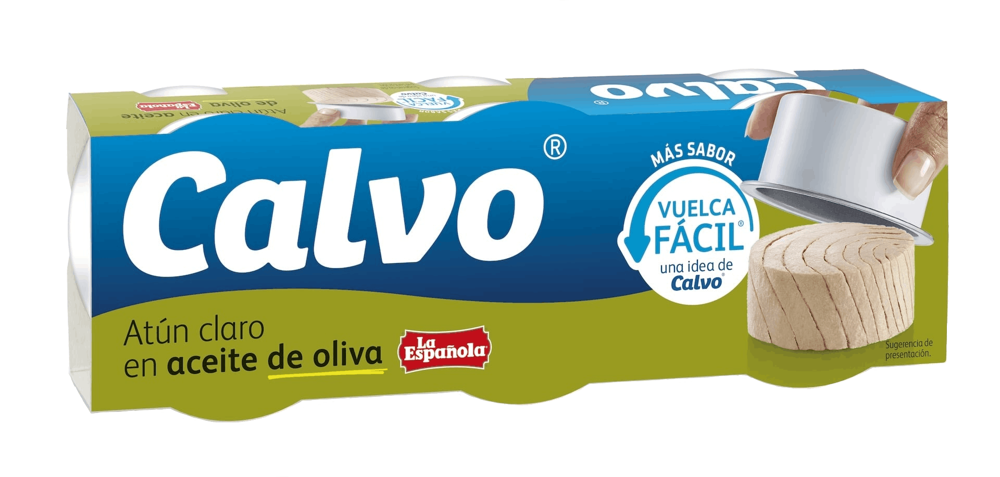
Salsas, conservas y AOVE. Conservas Calvo
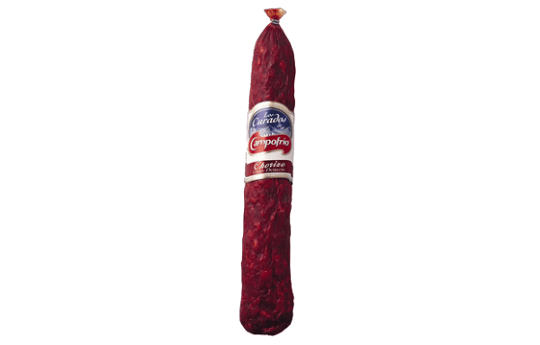
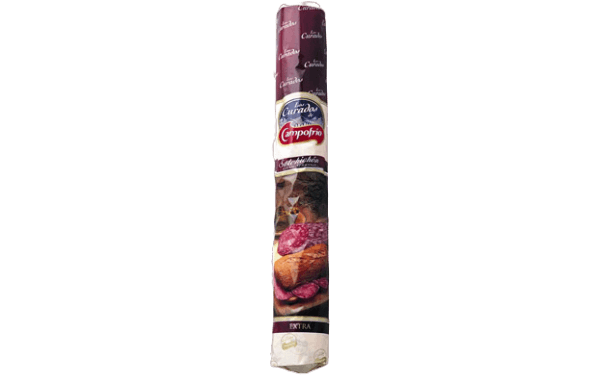
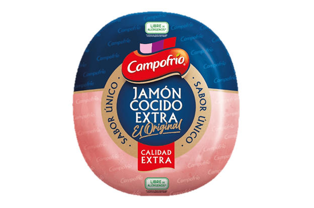
Embutidos y refrigerados. Campofrío
Gama de congelados para hostelería
Vajilla, cubertería, cristalería, mantelería y auxiliar
Repartimos en Medina del Campo y comarca, hasta unos 90 km a la redonda.
Distancia aproximada por carretera desde Medina del Campo.
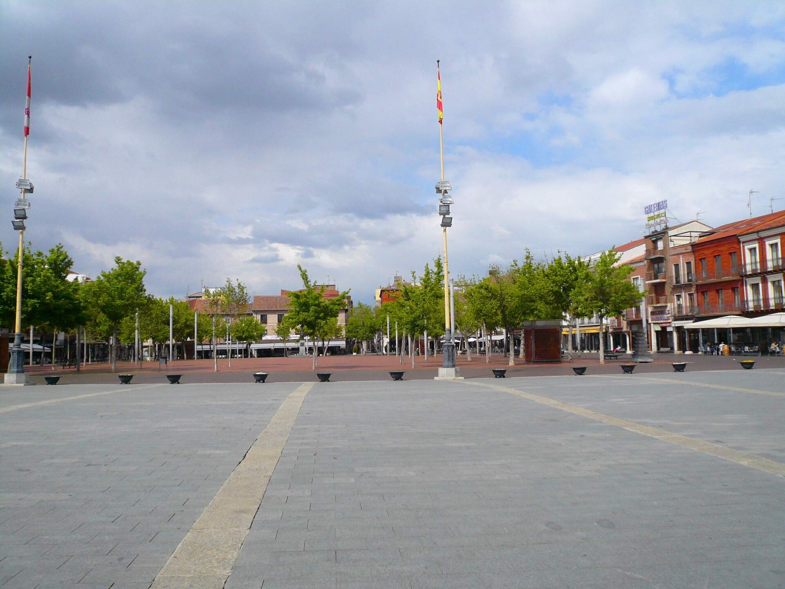
Cuéntanos qué necesita tu negocio y te respondemos lo antes posible.